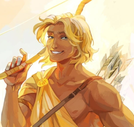
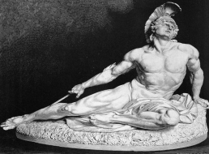

Autora: Gabriely Nascimento de Andrade
Tecnico em Desenvolvimento de Sistema - 4° Semestre
Os deuses do Olimpo, também conhecidos como "Os Olimpianos", são uma coleção de divindades poderosas que governavam sobre os diferentes aspectos do universo e da vida humana. Eles eram adorados e temidos pelos antigos gregos, e suas histórias eram contadas e recontadas através de gerações.
Cada um dos Olimpianos possuía atributos únicos, personalidades distintas e frequentemente se envolviam em intrigas, romances e conflitos entre si e com os mortais.
Vamos conhecer um pouquinho dos principais deuses do Olimpo:
Zeus - Senhor do Céu e Pai do Olimpo

Rei dos deuses e governante do Monte Olimpo, Zeus é o deus do céu, dos trovões e dos raios. Ele é conhecido por sua autoridade divina e por suas frequentes intervenções nos assuntos dos deuses e dos mortais. Ele é casado com sua própria irmã, a deusa Hera.
Poseidon - Deus dos Mares e terremotos
Sua figura imponente é simbolizada pelo tridente, instrumento de seu poder sobre as águas. Sua personalidade temperamental, capaz de desencadear tempestades furiosas ou proporcionar calmaria, reflete sua importância tanto como força natural quanto divina no Olimpo.
Atena - Deusa da sabedoria, estratégia e guerra justa
Atena é uma das divindades olimpianas mais respeitadas. Ela é frequentemente associada à cidade de Atenas, que leva seu nome.
Hera - Deusa da Família e Senhora do Olimpo
Rainha dos deuses e esposa de Zeus, Hera é a deusa do casamento, da família e da maternidade. Ela é conhecida por sua beleza majestosa, mas também por sua ciúme feroz em relação às amantes de Zeus.
Deméter - Deusa da agricultura e das estações
Deméter é responsável pelo crescimento das plantas e pela fertilidade da terra. Ela é venerada pelos agricultores e pela natureza abundante que ela proporciona.
Hades - Deus do submundo e dos mortos
Hades governa sobre o reino dos mortos. Ele é frequentemente retratado como sombrio e impiedoso, mas também como um juiz imparcial das almas após a morte. Hades é muitas vezes temido, mas também respeitado como uma força inevitável na vida dos mortais.
Dionísio - Deus do vinho
Deus do vinho, da festa e do êxtase, Dionísio é associado à celebração e à liberação das inibições. Ele é frequentemente acompanhado por sátiros e ninfas em suas festas.
Apolo- Deus da luz, da música, da poesia e da cura
Apolo é conhecido por sua beleza e graça. Ele também é o deus da profecia, tendo um famoso oráculo em Delfos.
Ártemis - Deusa da caça e da castidade
Irmã gêmea de Apolo, Ártemis é a deusa da caça, da natureza selvagem e da virgindade. Ela é protetora das donzelas e das criaturas selvagens.
Ares - Deus da guerra
Deus da guerra e da violência, Ares personifica a brutalidade da batalha. Ele é frequentemente retratado como um guerreiro impiedoso.
Afrodite - Deusa do amor
Deusa do amor, da beleza e da paixão, Afrodite inspira desejo e romance. Ela é frequentemente retratada como irresistivelmente bela e sedutora.
Hermes - Deus dos viajantes
Deus dos viajantes, dos comerciantes e dos ladrões, Hermes é o mensageiro dos deuses. Ele é conhecido por sua agilidade e esperteza.
Hefesto - Deus do fogo e dos metais
Deus do fogo, da metalurgia e da forja, Hefesto é um habilidoso artesão. Ele cria as armas e os artefatos dos deuses
Heróis
Na mitologia grega, os heróis são pessoas com habilidade extraordinárias, comumente filhos de Deuses e Humanos conhecidos como "Semideuses". Cheios de coragem, inteligência e força, são designados para enfrentarem desafios taxados como impossíveis. Suas jornadas são cheias de aventura e perigos e até romances. Os semideuses ocupam uma posição especial, pois representam a conexão entre os Deuses e os humanos, o mundo divino e o mundo mortal, deixando legado duradouro nas histórias gregas.
Hércules
Conhecido por sua força sobre-humana e seus doze trabalhos, Héracles é um dos heróis mais célebres da mitologia grega. Ele enfrentou inúmeras criaturas monstruosas e desafios impossíveis, demonstrando coragem e determinação
Perseu
Famoso por decapitar a Medusa e resgatar Andrômeda, Perseu é lembrado como um herói astuto e corajoso. Ele enfrentou várias provações, incluindo a busca pela cabeça da Medusa, que usou para derrotar seus inimigos.
Teseu
Herói de Atenas, Teseu é conhecido por derrotar o Minotauro no Labirinto de Creta. Ele também realizou outras façanhas notáveis, como a libertação de sua cidade natal e a união dos cidadãos sob um governo comum.
Aquiles
Famoso por sua invulnerabilidade, exceto por seu calcanhar, Aquiles é o protagonista da "Ilíada" de Homero. Ele foi um dos maiores guerreiros da Guerra de Troia, conhecido por sua bravura e habilidade em combate.
Relações Familiares
Na mitologia grega, as relações familiares desempenham um papel central, revelando complexidades e conflitos entre deuses e mortais. Os deuses, muitas vezes retratados como pais divinos, têm uma influência significativa na vida dos semideuses, que são filhos de uniões entre deuses e humanos.
As relações entre pais e filhos na mitologia grega refletem temas universais de amor, conflito, ambição e redenção. Eles ilustram a complexidade das relações familiares e a interação entre o divino e o humano, acrescentando uma dimensão fascinante ao rico tecido da mitologia grega.
- Urano e Gaia
- Cronos - titã
- Oceano - titã
- Céos - titã
- Hipérion - titã
- Jápeto - titã
- Reia - titã
- Têmis - titã
- Mnemósine - titã
- Teia - titã
- Cronos e Reia
- Zeus - deus olimpiano
- Poseidon - deus olimpiano
- Hades - deus olimpiano
- Hera - deusa olimpiano
- Demeter - deusa olimpiano
- Hestia - deusa olimpiano
- Zeus e Hera
- Ares e Hefesto - deuses olimpianos
- Hebe e Ilitia - deusas
- Zeus e Leto
- Apolo e Ártemis - deuses olimpianos
- Zeus e Maia
- Hermes - deus olimpiano
- Hermes e Maia
- Pan - deus
- Zeus e Alcmena
- Hércules - semideus
- Zeus e Danae
- Perseu - semideus
- Zeus e Leda
- Pólux e Helena- semideuses
- Apolo e Coronis
- Asclépio - semideus
Templos
Os templos na mitologia grega eram estruturas sagradas dedicadas aos deuses e deusas do panteão olímpico. Eles serviam como locais de adoração, culto e celebração religiosa, onde os devotos podiam fazer oferendas, realizar rituais e oferecer preces aos divinos.
Os templos gregos eram construídos com uma variedade de estilos arquitetônicos, sendo os mais comuns o dórico, jônico e coríntio. Geralmente, eles consistiam em uma sala principal, chamada naos ou cela, que abrigava a estátua da divindade venerada, e um pórtico frontal, conhecido como pronaos.
Os templos eram frequentemente localizados em locais de significado religioso, como encostas de montanhas, cumes de colinas ou ao lado de nascentes de água, simbolizando a proximidade entre os deuses e a natureza. Muitos templos também eram parte de complexos maiores, que incluíam áreas para festivais, teatros ao ar livre, ginásios e estádios.
Veja a seguir alguns dos templos mais famosos:
Partenon - Cidade de Atenas
Dedicado à deusa Atena, o Partenon é um dos templos mais icônicos do mundo antigo e um símbolo da civilização grega. Localizado na Acrópole de Atenas, foi construído entre 447 e 438 a.C. durante o governo de Péricles. É conhecido por sua arquitetura dórica imponente e pelas esculturas em mármore que decoravam suas fachadas.
Templo de Apolo - Cidade de Delfos
Este templo estava localizado em Delfos, onde o famoso Oráculo de Delfos fazia suas profecias. Dedicado ao deus Apolo, era um centro importante de culto e peregrinação na Grécia Antiga. O templo foi reconstruído várias vezes ao longo dos séculos e hoje restam apenas ruínas, mas sua importância espiritual e histórica perdura.
Templo de Zeus Olímpico - Cidade de Olímpia
Este majestoso templo estava localizado em Olímpia, na região do Peloponeso, e era dedicado ao deus supremo do panteão olímpico, Zeus. Foi construído entre os séculos VI e V a.C. e era ornamentado com uma gigantesca estátua de Zeus feita pelo famoso escultor Fídias. Embora hoje em dia esteja em ruínas, suas dimensões impressionantes testemunham sua grandeza no passado.
Templo de Ártemis - Cidade de Éfeso
Este templo dedicado à deusa Ártemis foi uma das Sete Maravilhas do Mundo Antigo. Estava localizado em Éfeso, na Ásia Menor (atual Turquia), e era um dos maiores templos da antiguidade. Era conhecido por sua arquitetura grandiosa e pelas inúmeras esculturas e oferendas dedicadas à deusa da caça.
Livros sobre Mitologia
- Mitologia grega
- Percy Jackson e os Olimpianos
- "Percy Jackson e os Olimpianos" é uma série de livros de fantasia escrita por Rick Riordan, que segue as aventuras de Percy Jackson, um semideus filho de Poseidon, no mundo moderno. A série incorpora elementos autênticos da mitologia grega, reimaginando deuses, monstros e mitos clássicos em um contexto contemporâneo. Além de entreter, a série também serve como uma introdução acessível à mitologia grega para os leitores mais jovens.

- Mitologia greco-romana
- Percy Jackson e os Deuses do Olimpo
- "Os Heróis do Olimpo" é uma série de livros de Rick Riordan, que continua a história de "Percy Jackson e os Olimpianos". Esta série explora tanto a mitologia grega quanto a romana, apresentando novos personagens e expandindo o universo estabelecido anteriormente. Os livros misturam elementos autênticos da mitologia com imaginação, proporcionando uma narrativa rica em aventura e suspense. Ao longo da série, os personagens enfrentam desafios inspirados em mitos clássicos, enquanto aprendem sobre sua herança divina e a complexa relação entre as tradições grega e romana.